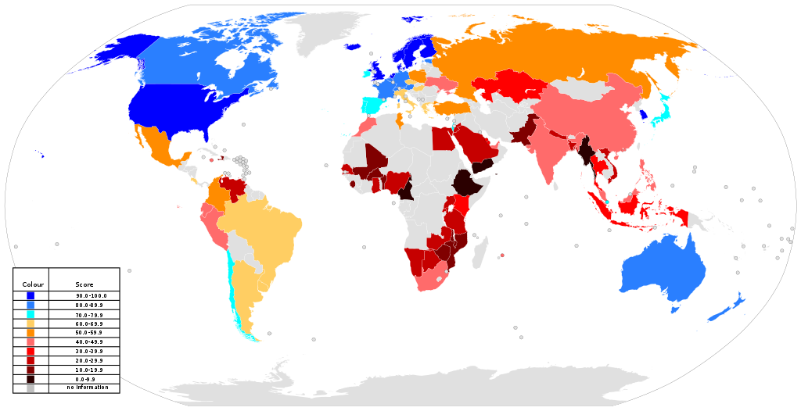

| contry(나라) | Latitude(경도) | Longitude(위도) |
| KOREA | 37.5665° N | 126.9780° E |
| US | 37.0902° N | 92.7129° W |
| CHINA | 35.8617° N | 104.1954° E |
The World Wide Web (WWW), commonly known as the Web, is an information system where documents and other web resources are identified by Uniform Resource Locators (URLs, such as https://www.example.com/), which may be interlinked by hypertext, and are accessible over the Internet.[1] The resources of the WWW may be accessed by users by a software application called a web browser.
